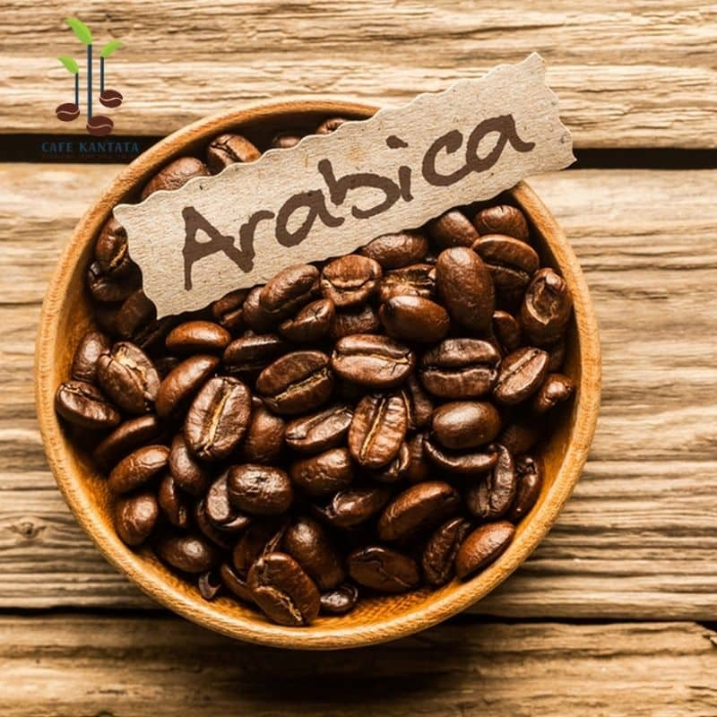

Khởi nguồn
Từ cao nguyên
Từ cao nguyên
đến tách cà phê
Năm 2018, những người sáng lập PAUSE COFFEE rong ruổi qua các nông trường Cầu Đất (Lâm Đồng) và Cư M’gar (Đắk Lắk). Chứng kiến cà phê bị pha trộn tạp chất, chúng tôi quyết tâm đưa hạt cà phê Việt về đúng giá trị nguyên bản.
Chỉ hợp tác với hộ nông dân hái chín 100%, lên men tự nhiên và phơi giàn trong nhà màng để giữ trọn lớp đường mật của vỏ quả.
Quy trình
4 bước tạo nên hương vị
Thu hái chín cây
Chỉ chọn trái chín mọng 100%, độ đường và độ ẩm đồng đều.
Sơ chế mật ong
Giữ lớp nhầy giàu đường, tạo hậu vị ngọt sâu lắng.
Rang mộc thủ công
Mỗi mẻ rang căn chỉnh nhiệt chính xác, không tẩm ướp.
Chiết xuất hoàn hảo
Pha phin hoặc Espresso 9 bar để giữ lớp crema sánh vàng.

3 cam kết
của LYNK
- ☕100% cà phê nguyên chấtKhông bơ, bắp, đậu nành hay hương liệu.
- 🤝Đồng hành cùng nông dânThu mua công bằng, canh tác bền vững.
- 💖Hiếu khách tận tâmMỗi khách ghé quán là một người bạn.